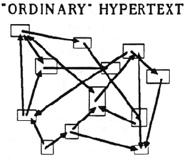
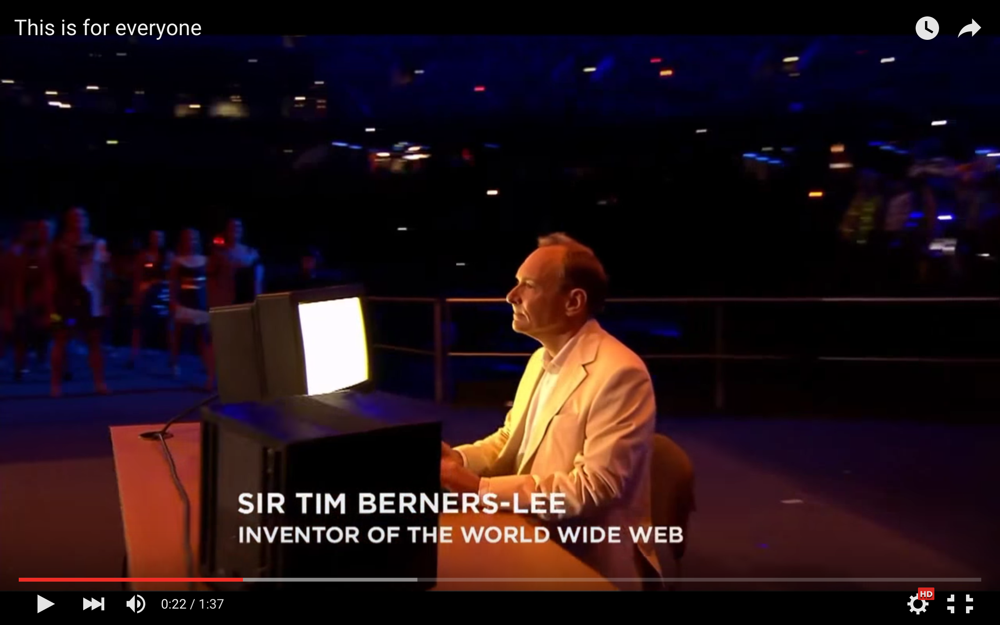

[독후감] 멀티미디어: 바그너에서 가상현실까지
이 글은 [2015 이상한 모임 Advent 캘린더에 등록](http://1225.weirdx.io/)하기 위해 작성하였습니다.
선정한 책
⟪멀티미디어: 바그너에서 가상현실까지⟫(이하 ⟪멀티미디어⟫)는 시각화 스터디 모임에서 고전 읽기를 테마로 정하고 나서 두 번째로 선택된 책이다.
'멀티미디어'라는 단어가 요즘의 '빅데이터' 같은 느낌으로 광범위하게 사용되던 2000년 초반 무렵, '멀티미디어'와 관련된 다양한 개념들(상호작용성, 연결성 등)을 고민했던 사람들의 글을 모아 엮은 책이라고 할 수 있겠다.
원서와 번역서
원서는 2001년 발간된 후 2002년에 확장/개정판이 나왔지만, 번역서는 2001년 판을 옮겼다. 현재 번역서는 절판 상태고, 출판 주체였던 '아트센터 나비'에 가면 열람은 할 수 있다. (스터디 모임에선 중고 서적을 구입해서 읽었다.)
소개
2000년대가 어땠는지 잘 기억이 나진 않지만, ⟪멀티미디어⟫ 책을 통해 추측해보자면 당시 '멀티미디어'라는 개념이 컴퓨터나 HCI(Human-Computer Interaction)까지 모두 포괄했던 모양이다.
이 책에는 멀티미디어 세상을 꿈꾸고 실험하고 구현했던 여러 사람들의 논문, 에세이 혹은 기사 등이 실려 있다. 이렇게 말하면 굉장히 재미 없는 책인 듯 하지만, 이 글들을 쓴 저자들의 면면을 살펴보면 절대로 그렇지 않다.
- 이반 서덜랜드 - 스케치패드의 창시자
- 더글라스 엥겔바트 - 마우스, 윈도우, 워드 프로세서의 창시자
- 앨런 케이 - 태블릿 컴퓨터의 창시자
- 테드 넬슨 - 하이퍼텍스트의 창시자
- 팀 버너스-리 - 웹의 창시자
즉, '멀티미디어'뿐만 아니라 현재의 컴퓨터, 모바일, 웹, IT 모두에 영향을 끼친 개척자들이, 어떤 생각으로 해당 개념들을 만들게 되었는지를 엿볼 수 있는 중요한 책이다.
책 구성
⟪멀티미디어⟫는 크게 통합(Integration), 상호작용성(Interactivity), 하이퍼미디어(Hypermedia), 몰입(Immersion), 서사성(Narrativity)의 다섯 부로 나뉘며, 각 부 별로 시대 순서에 따라 글이 실려 있다.
감상
아직 몇몇 부분을 못 읽기는 했지만 그래도 드는 생각은,
나는 컴퓨터 공학 전공자임에도 왜 이런 내용을 배우지 못했나
이다.
과거의 글이지만 전혀 시대에 뒤떨어지지 않는, 아니 어쩌면 아직까지도 그들의 상상력을 현시대가 쫒아가지 못하고 있다는 생각이 들 정도로 참신하고 재미있는 아이디어들을 많이 엿볼 수 있었다.
(물론 저자가 여러 사람이다 보니 어떤 글은 무척 어렵고, 어떤 글은 재미가 없기도 하다.)
노버트 위너(Norbert Wiener)
❬인간의 인간적 사용❭이라는 글에서 노버트 위너는 인체의 신경계가 메시지를 주고 받는 방식에서 착안하여 인간과 기계 사이에서 메시지(명령 혹은 데이터)를 전달하는 방식을 만들어 냈다고 말한다.
여기서 내가 주목한 부분은
사람과 기계 간 혹은 기계와 사람 간 혹은 기계와 기계 간에 메시지를 이해하는 과정(=커뮤니케이션)이 점점 중요해질 것
이라는 예언이다. (요즘은 기계와 사람 사이의 커뮤니케이션은 고사하고, 사람과 사람 사이의 커뮤니케이션도 점점 망해가는 느낌이지만...)
세기의 천재 노버트 위너 느님(출처: http://www.w2vr.com/timeline/Wiener.html)
또, 흔한 메시지(ex. 안녕하세요)일수록 정보가 적고,
압축된 메시지(ex. 미사일 버튼을 누르는 행위)일수록
가치 있는 정보가 담겨 있다는 주장도 흥미롭다.
(노버트 위너는 굉장한 천재였다고 한다. 14세에 수학 전공으로 대학을 졸업하고, 20세에는 러셀, 하디, 힐베르트 같은 사람들에게 수학을 배우기 위해 유럽으로 건너갔다고...)
테드 넬슨(Ted Nelson)
테드 넬슨은 또 어떤가?
그는 정보가 더이상 순차적일 필요가 없다며
하이퍼텍스트라는 개념을 주장하는데,

하이퍼텍스트 구성도 (출처: http://www.w2vr.com/timeline/Nelson.html)
정보들은 서로 얽히고 섥힌 채 독자에게 전달되며,
여기에 독자들은 자신만의 생각을 덧붙여 또다른 하이퍼텍스트를 만들 수 있다.
기존에 큰 책의 덩어리로만 존재했던 텍스트는,
별개의 정보 단위로 떨어져 나왔을 때 오히려 그 생명력이 강해진다.
팀 버너스-리(Tim Berners-Lee)
이 개념은 이후 팀 버너스-리에 의해 좀더 명확해지며,
실제 시스템으로 구축되기에 이른다. 이것이 바로 웹의 시초다.

영국 올림픽 개막식에 등장하신 팀 버너스-리 님
그런데... 웹이 출현한지 20년이 넘었음에도 독자들이 자신만의 생각을 덧붙여 또다른 하이퍼텍스트를 만드는 순환 과정이 그리 잘 되고 있는 것 같지는 않다.
(어쩌면 대다수 독자들은 그런 작업을 하고 싶어하지 않는 건지도 모르겠다.)
앨런 케이(Alan Kay)
앨런 케이를 살펴보더라도,
그가 처음 고안한 '다이나북'의 개념은
휴대용 정보 단말기 정도의 수준이 아니라
사용하려는 애플리케이션을 직접 만들어 볼 수 있고
다른 사람이 만든 애플리케이션을 수정해서 사용할 수 있는 정도까지 그려진다.
http://www.nicovideo.jp/watch/sm1675694
앨런 케이를 다룬 NHK의 다큐멘터리(중간에 다이나북의 프로토타입과 이를 다루는 아이들의 모습도 나온다.)
하지만 이러한 확장 가능성이라는 면이 구현된 적이 있던가?
내가 컴퓨터를 처음 배웠던 시절엔 그나마 가능성이 많았던 것 같은데, 사용성(혹은 사용 편의성)이 나아지면 나아질수록 확장성은 점점 후퇴하고 있는 상황이 아닐까. iOS가 그 대표적인 예인 듯 하고. (이건 함께 스터디를 했던 nacyot님의 생각인데 정말 무릎을 탁 치게 만들었다.)
원래 앨런 케이의 기획대로라면 앱(=프로그래밍)이라는 건 별도의 플랫폼 위에서 만들어지고 실행되야 하는 게 아니라 플랫폼 자체에서 구성되고 실행되고 실험되어야하는 거였던 것 같다. iOS는 정말 완벽할 정도로 정 반대의 세계.
— nacyot (@nacyo_t) 2015년 12월 6일이러한 상황이니, 윌리엄 깁슨(⟪멀티미디어⟫의 추천사를 썼다)의 '미래는 이미 와 있다'는 말을 조금 바꿔야하지 않을까 싶다. '미래는 (부분적으로만) 이미 와 있다.'
더 정확히 말하자면
'선구자들이 상상했던 컴퓨터, 인공지능, 웹의 모습은
지금 우리가 누리고 있는 그것들보다 훨씬 더 풍요로왔다'
그리고 다시 한 번 앨런 케이의 말을 되짚어 본다.
'미래를 예측하는 가장 좋은 방법은 미래를 창조하는 것이다.'
버니바 부시(Vannevar Bush)
마지막으로 버니바 부시 이야기를 하지 않을 수 없다. 바네바 부시가 쓴 ❬우리가 생각하는 대로(As We May Think)❭라는 글을 읽으며, 컴퓨터가 천공카드를 읽어 대던 시절(1945년)에 발표된 글임에도 지금의 정보 관리 도구에서도 모두 해결하지 못하는 개념을 상상해냈다는 사실이 굉장한 충격을 준다. 당대에도 크게 영향력을 발휘하여 엥겔바트나 테드 넬슨의 글 등에서 끊임 없이 부시의 이름이 언급된다.
1995년, ❬우리가 생각하는 대로❭ 발표 50주년을 맞이해서 MIT와 브라운 대학이 함께 '버니바 부시 심포지움' 주최했는데, 발표자들의 면면을 보면 가히 어벤저스라고 부를 만하다.
총평
제목이 ⟪멀티미디어⟫여서 처음에는 별로 흥미가 가지 않았는데, 한 꼭지씩 읽고, 발제를 위해 자료를 조사하면서 책에 대한 평가가 180도 바뀌었다.
마지막으로 내 의견을 정리해보자면...
번역서가 절판되었다는 사실이 안타깝다. 더 많은 사람이 이 내용을 접하고, 그 깊숙히 숨어 있는 가치를 발견하여 현대적 가치로 바꿔준다면 미래가 더 재미있어질 것 같다.
내용이 어렵기도 해서 내가 번역을 할 수는 없지만, 다행히 스터디에서 배운 내용들을 위키백과에 정리하는 에디터톤을 진행할 예정이다. 관심이 있다면 시각화 스터디 슬랙에 가입해주세요. :)